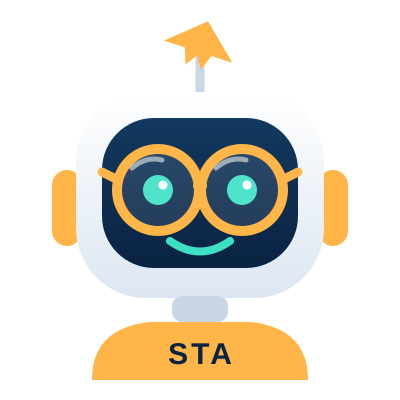

Vision AI extracts the ticket; users review and edit a draft before anything is saved.
Dual-write to DynamoDB and Google Sheets with a SHA-256 row hash.
Role-based BI with code-computed numbers, plus automatic 24-hour flight reminders.